식물은 생명이다.
이 말은 우리가 식물의 필요에 귀를 기울이면 식물이 우리 영혼의 빈자리를 채워줄 수 있다는 뜻이다.
내 말이 이상하게 들리거나 가식적으로 느껴질 수도 있지만, 나는 서로를 돌보고 위로함으로써 활력소가 되는 것이 식물과 인간의 가장 자연스러운 역할이라고 믿는다.
<도시 속의 월든, 서머 레인 오크스>
식물은 보고 듣지도, 말하지도, 움직이지도 못하는 것처럼 보이지만 분명 나름대로 정신세계가 있다.
존재 자체로 충분히 어떤 교감을 주고받을 수 있는 대상이다.
<식물의 위로, 박원순>
타이틀 이미지
반려식물이 무엇인가요?
식물도 친구가 될 수 있어요.
최근 식물에게 반려동물 못지 않은 정서적 애착을 느낀다는 사람들이 점점 많아지고 있어요! 더 이상 식물은 그저 공기 정화와 인테리어의 역할만 하는 것이 아닌거죠.
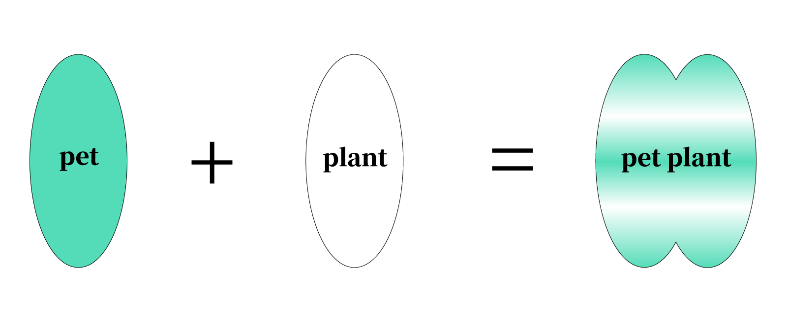
반려동물을 뜻하는 펫(pet)과 식물을 뜻하는 플랜트(plant)가 합쳐져 만들어진 말로, 반려동물처럼 곁에 두고 키우는 반려식물을 뜻하는 신조어이다.
[네이버 지식백과] 펫 플랜트 (시사상식사전, pmg 지식엔진연구소)
왜 반려식물 인가요?
식물은 날 기쁘게 해요!
특히, 최근 길어지는 코로나 사태로 인해 생기는 우울함과 무기력을 없애고, 심리적 안정을 찾기 위해 반려 식물을 찾는 사람이 증가하고 있어요.
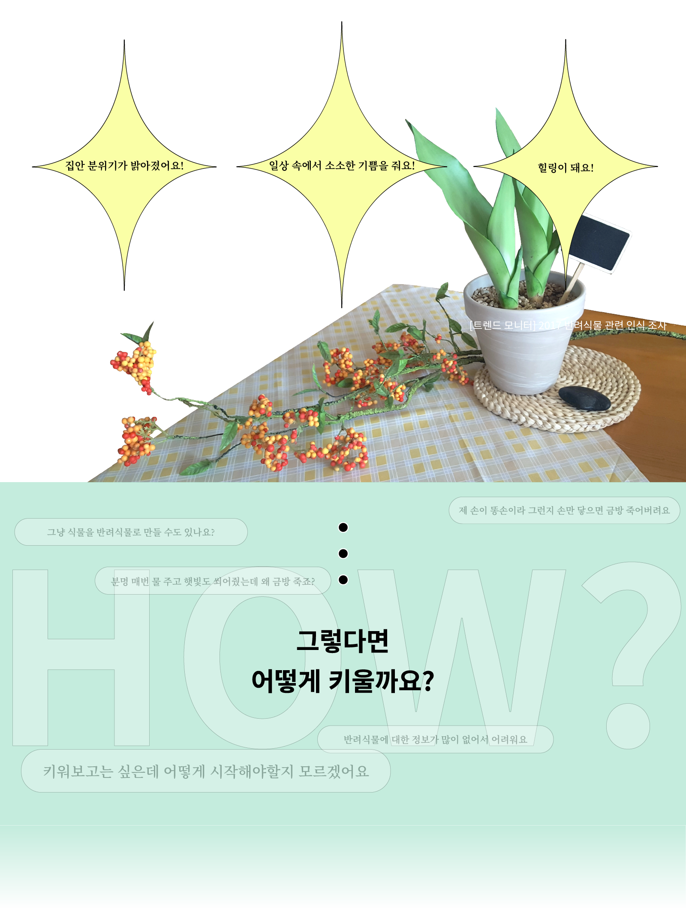
당신을 위해 준비했어요!
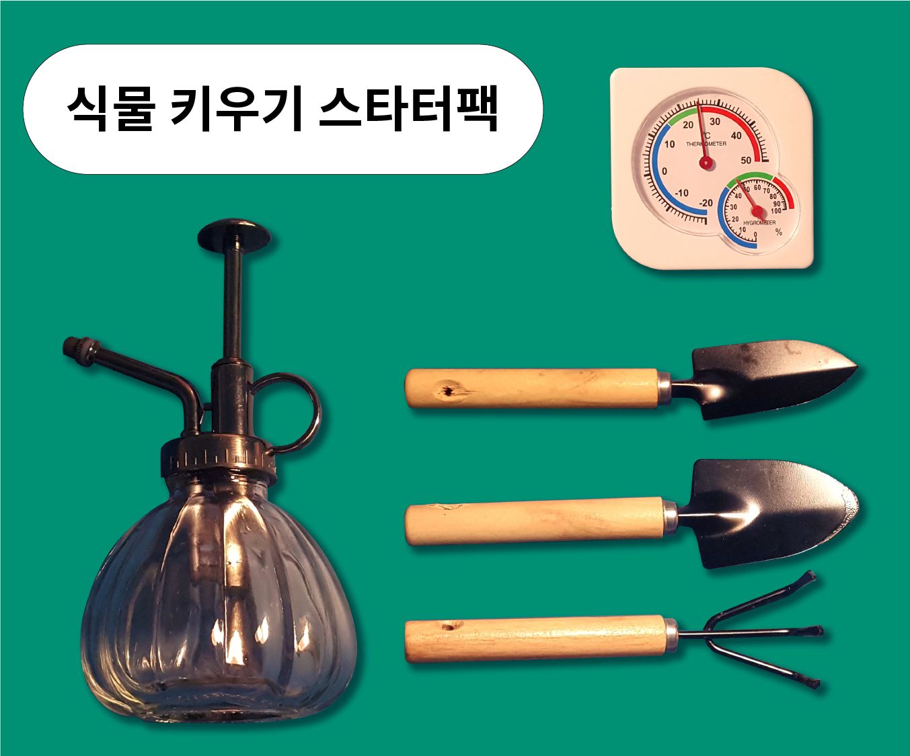
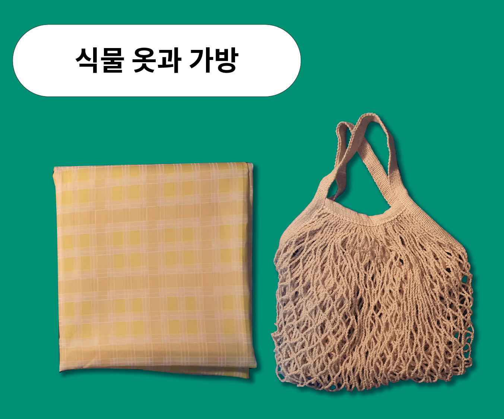
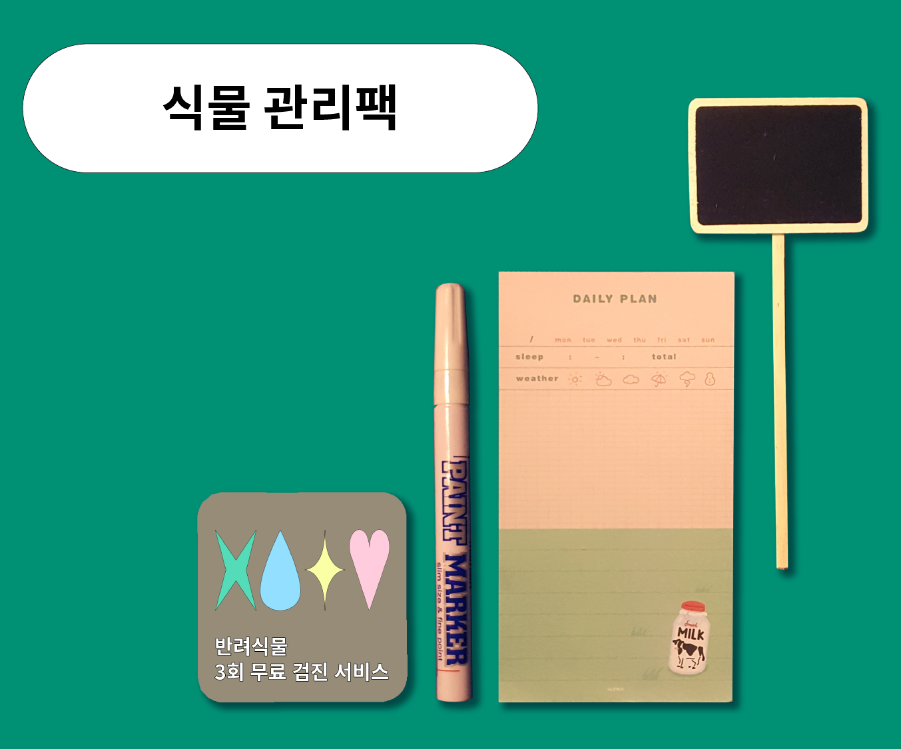
당신이 준비할 것은...
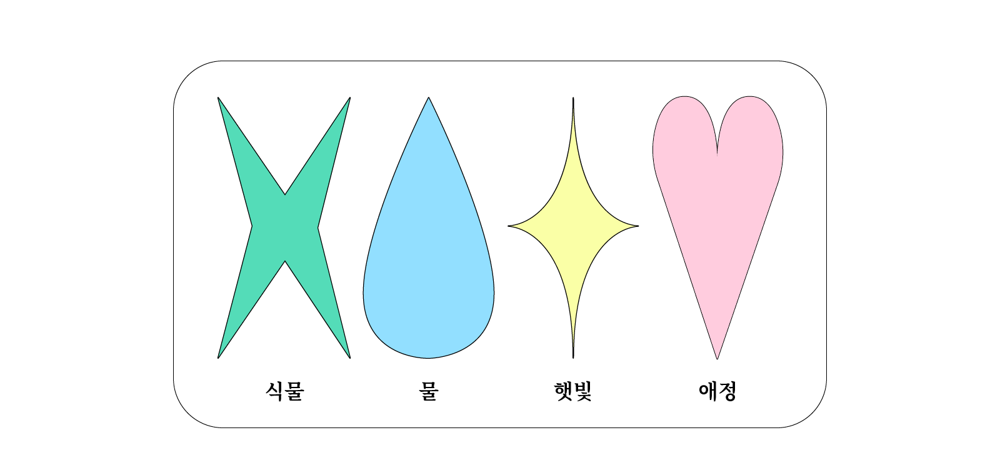
네가지만 있으면 준비는 끝이에요!
그럼 시작해볼까요?
STEP 1
만나기
친구와 첫 인사는 하셨겠죠?
이름을 지어주고 화분을 예쁘게 꾸며보세요.
친구가 된 날을 적어두고 매년 기념해보는 건 어떨까요?
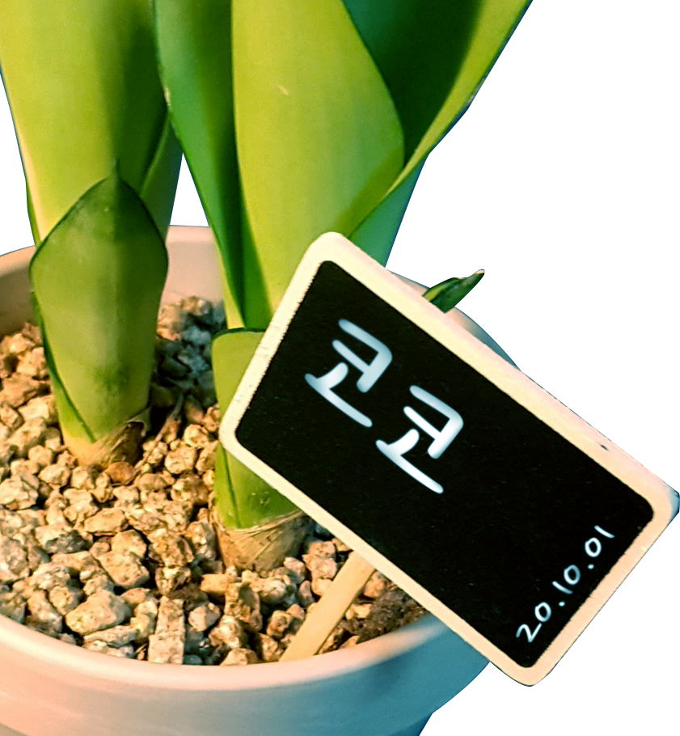
일지 기록 사진
당신의 반려식물은 소리 대신 모양으로 얘기해요.
매일 흙의 상태와 잎의 상태를 관찰해주세요.
당신의 반려식물이 무슨 애기를 하는지 단번에 알 수 있을 거에요!
STEP 2
친해지기
이제 그럼 우리 추억을 쌓아볼까요?
산책도 가고 영화도 보고!
오늘은 뭘 할까요?
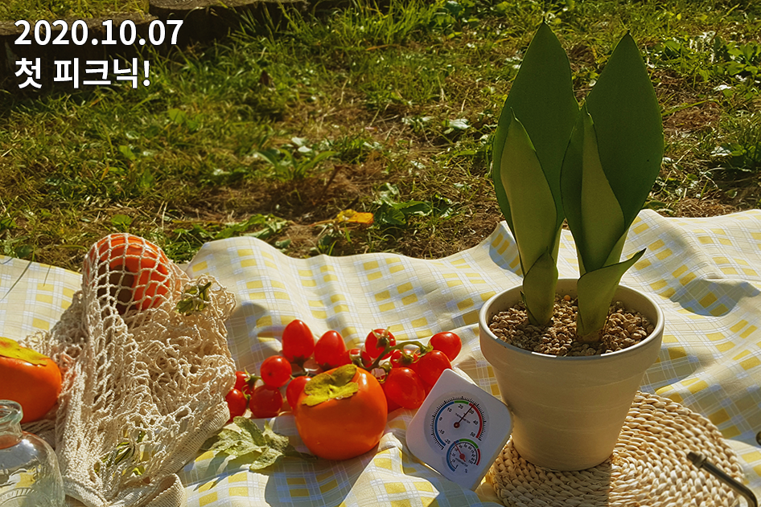
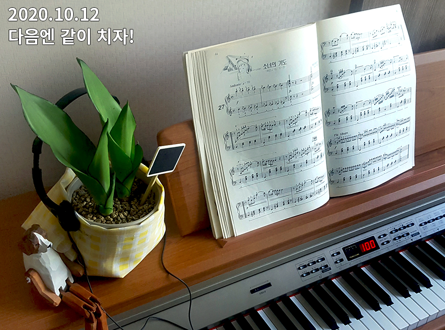
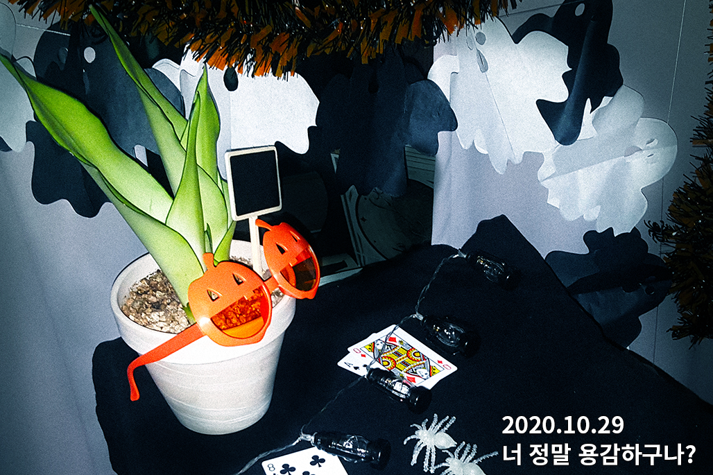
STEP 3
보살피기
당신의 식물이 항상 건강할 수는 없어요.
그래도 걱정마세요!
저희가 오래오래 도와드릴게요!
식물 키우기 스타터팩 사용 이미지
가끔은 흙과 잎을 관리해주세요. 그리고 온도와 습도도 함께 체크해주세요!
매일매일 관심을 줘도 갑자기 아플 수도 있어요. 그럴 땐 저희에게 연락주세요! 나무의사와 함께 도와드릴게요!
3회 무료 검진 서비스 소개
STEP 4
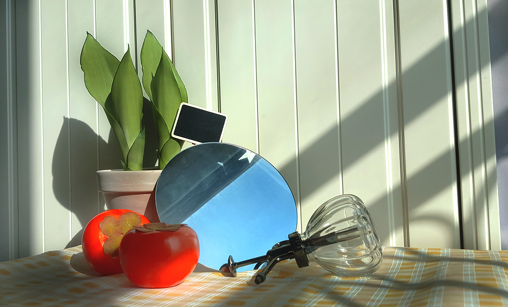
행복하기
당신과 당신의 친구가 꼭 오래오래 행복하길 빌게요.
가끔 소식도 꼭 들려주세요!
기쁜 소식만 잔뜩 있길 바래요!
SNS 후기 사진